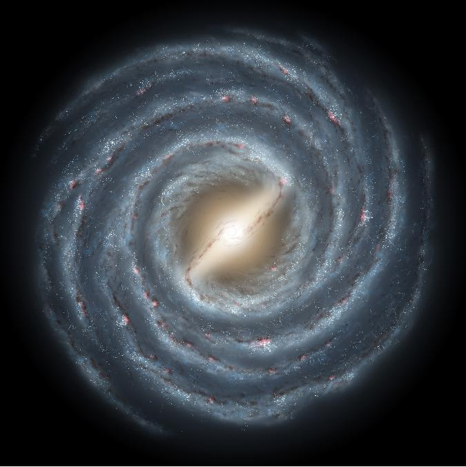

Nuestra galaxia
Conoce la estructura de la Vía Láctea, sus principales regiones y la ubicación de nuestro sistema solar.
Explorar la Vía LácteaMás allá de las estrellas es un sitio dedicado a la divulgación astronómica. Aquí encontrarás información sobre nuestra galaxia, la evolución de las estrellas, los objetos cósmicos y otras galaxias del universo.
El objetivo del sitio es presentar estos temas de forma clara y accesible, organizando la información en distintas secciones para facilitar la exploración de cada contenido.
A lo largo de las diferentes páginas podrás conocer cómo está formada la Vía Láctea, cómo nacen y evolucionan las estrellas, qué características tienen algunos de los objetos más sorprendentes del espacio y qué tipos de galaxias existen más allá de nuestro entorno cercano.
Cada sección está pensada como una introducción a estos temas, acompañada por descripciones e imágenes que ayudan a comprender mejor la escala y la diversidad del universo.

Conoce la estructura de la Vía Láctea, sus principales regiones y la ubicación de nuestro sistema solar.
Explorar la Vía LácteaConoce cómo nacen las estrellas dentro de enormes nubes de gas, cómo cambian durante millones de años y qué ocurre al final de sus vidas.
Descubrir las estrellasExplora nebulosas, cúmulos estelares, púlsares y agujeros negros, algunos de los objetos más sorprendentes de nuestra galaxia.
Conocer los objetos cósmicosViaja más allá de nuestra galaxia para conocer galaxias espirales, elípticas e irregulares, además de nuestras vecinas cósmicas más cercanas.
Explorar otras galaxias